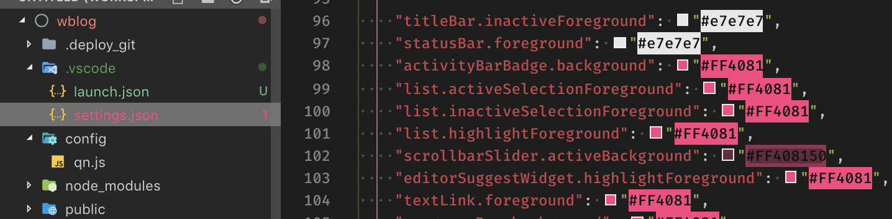
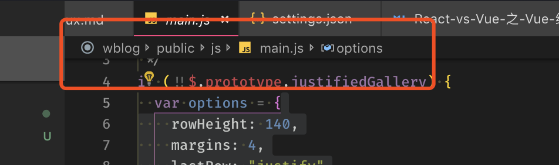

VSCode前端开发使用总结
这是一个 vscode 的使用小 tip，会不定期更新。
之前一直在使用 WebStorm 编辑器，特别好用，但是缺点也有的，内存吃不消。后来接触 vscode，但其间因为各种原因弃奔了几次转回 Webstorm。现在，又回来了…
推荐插件
- IntelliJ IDEA Keybindings - 支持 intelliJ 快捷键
- Live Server - 支持本地服务器
- Material Icon Theme - Material 风格的图标
- Terminal Tabs - 支持 termial tab，可快速打开 termial
- Auto Close Tag - html 标签自动关闭
- Auto Rename Tag - html 修改标签
- GitLens
- Markdown Preview Enhanced - Markdown 预览
- Markdown All in One
- Open Recent Files - 模拟 Intellij cmd + e
- Material Icon Theme - material 主题
- Terminal Tabs
常用快捷键
| 功能 | 操作 |
|---|---|
| 多光标 1 | cmd + option + ↑ |
| 多光标 2 | option + 鼠标左键 |
| 移动行 | option + option + ↑ |
| 光标移动到最顶最底部 | command + ↑ |
| 选择多行 | shift + ↑ |
| 复制行 | command + D |
| 光标到行首或行尾 | command + ← |
| 光标以单词为单位移动 | option + ← |
| 光标以单词为单位选中 | shift +option + ← |
| 隐藏显示左侧 explorer | command + 1 |
| 在 explorer 上定位当前文件位置 | command + 1 + command + 1 |
| 全局搜索 | command + shift + F |
| 全局替换 | command + shift + R |
| 文件内搜索 | command + F |
| 文件内替换 | command + R |
| 折叠文件夹 | command + ↓ |
| 展开文件夹 | command + → |
| 创建文件 | command + N |
| 创建文件夹 | shift + command + N |
| 修改文件（夹）名 | shift + F6 |
| 删除文件(夹) | command + delete |
| 关闭文件 | command + W |
| 全局搜索文件并跳转 | shift + command + O |
| 选择最近浏览的文件 | command + E |
| 退回到上一处光标位置 | command + U |
其他
修改 vscode 样式
有很多可以修改 vscode 样式的参数：
1 | // settings.json |
比如你想让左侧的 explor 栏变得更窄更小一些的话，可以这样设置：
1 | // settings.json |
我的更多设置：
1 | { |
设置好之后差不多是这样的：

显示文件面包屑
1 | { |
设置好之后文件的顶部会显示当前文件面包屑：
